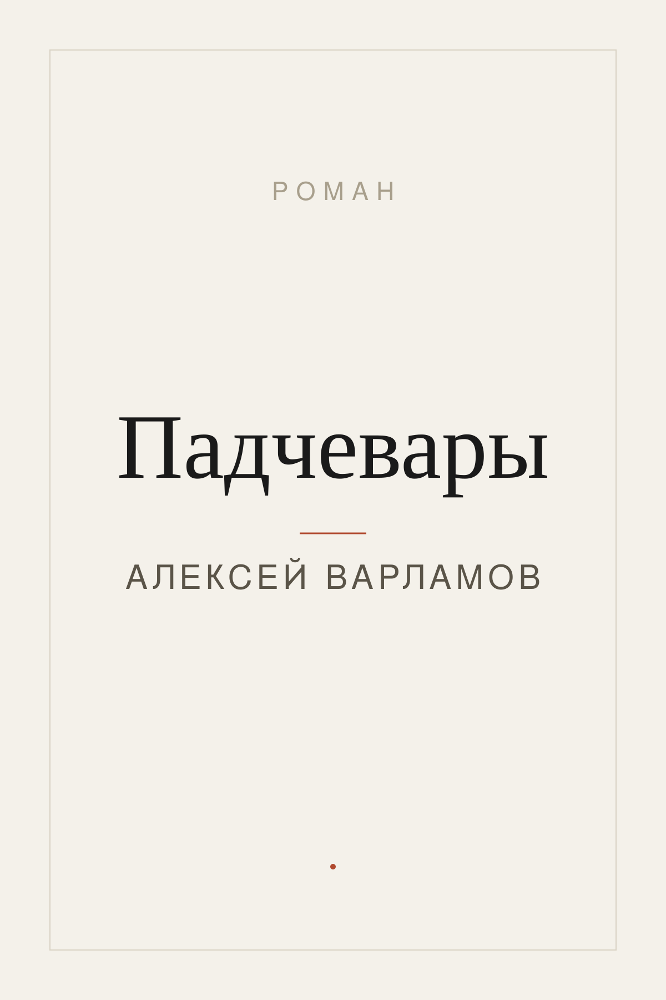
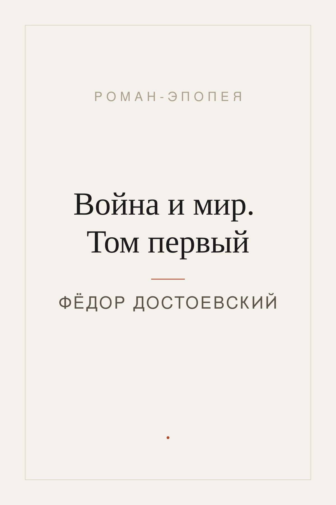
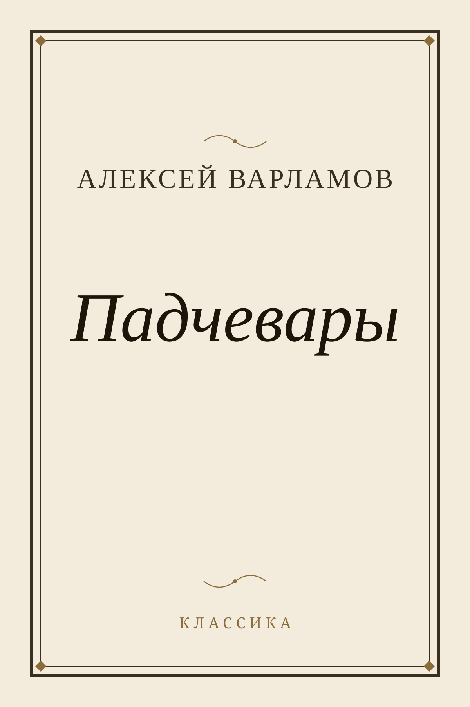
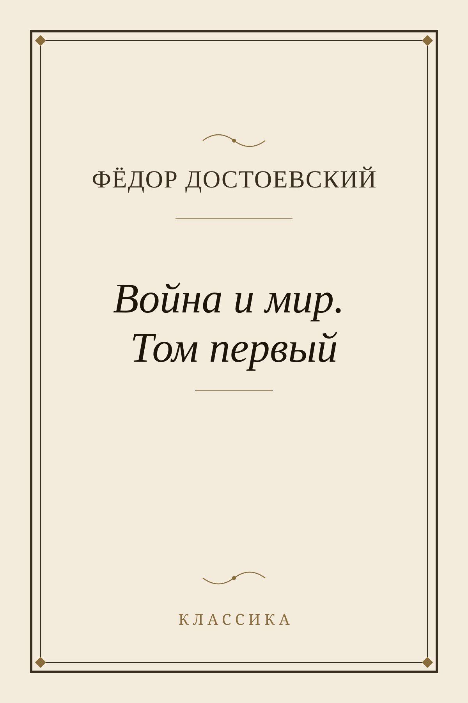
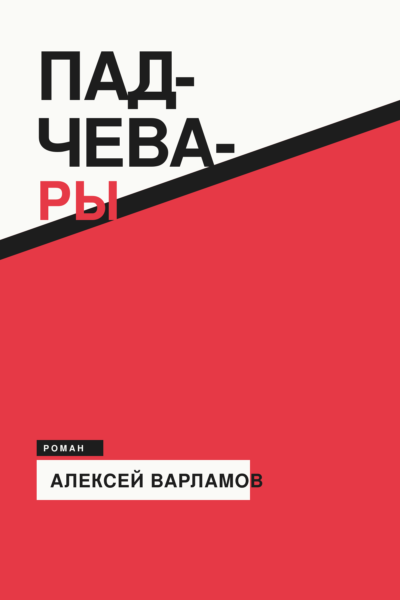
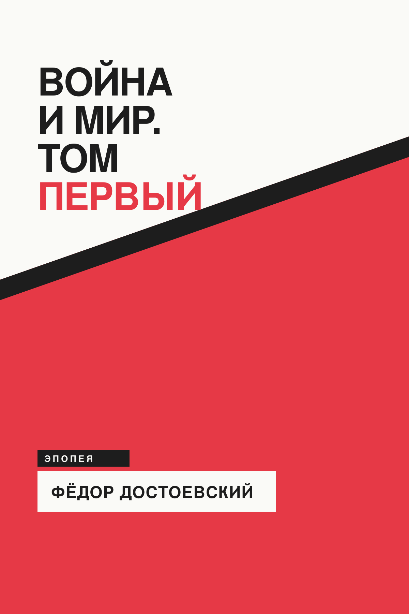
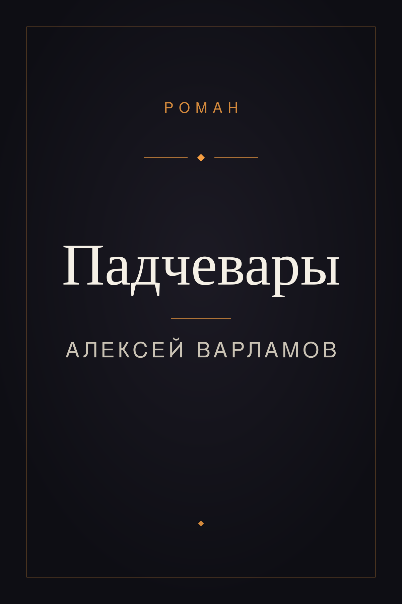
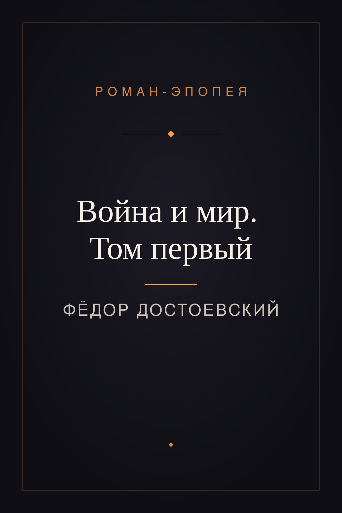

Когда обложка книги не найдена в интернете, приложение собирает её скриптом
(без генеративного ИИ) — чистая типографика: фамилия автора + название. Ниже 4 разных
характера. У каждого — пример с коротким названием («Падчевары» / Алексей Варламов)
и с длинным («Война и мир. Том первый» / Фёдор Достоевский) для проверки устойчивости.
Формат каждого — портрет 2:3 (1200×1800), вектор SVG.
Правки от человека (2 раунда): кегли в шаблонах 1, 2, 4 укрупнены под маленькие
экраны читалок (6″/4″/3.5″) — название ещё ×1.15, метки и автор ×1.25 поверх прошлого +20%.
Шаблон 3 не менялся (там кегли и так крупные).
Много воздуха, тонкая антиква, одна акцентная линия. Тихо и интеллигентно.


Благородная двойная рамка, флёроны, центрированная антиква. Издательский том.


Крупный жирный гротеск, контрастная диагональ, цвет-блок. Экспрессия и характер.


Тёмный фон в стиле приложения fb2-to-epub, тёплый оранжевый акцент, тонкая рамка. Дорого.

